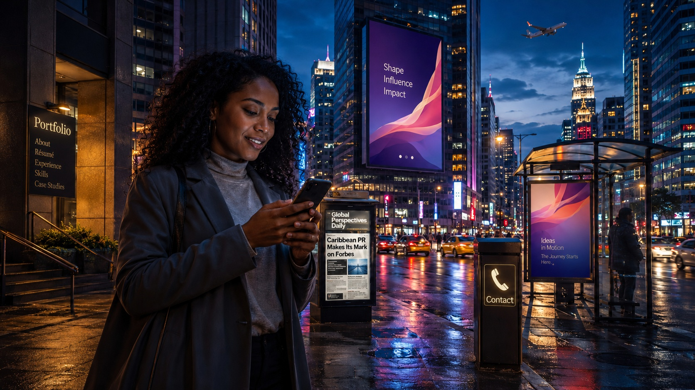

[YOUR NAME]
Senior Marketing Strategist
Explore the city to discover selected work in advertising, public relations, social media and international strategy.
Select an illuminated object to explore.

Senior Marketing Strategist
Explore the city to discover selected work in advertising, public relations, social media and international strategy.
Select an illuminated object to explore.
